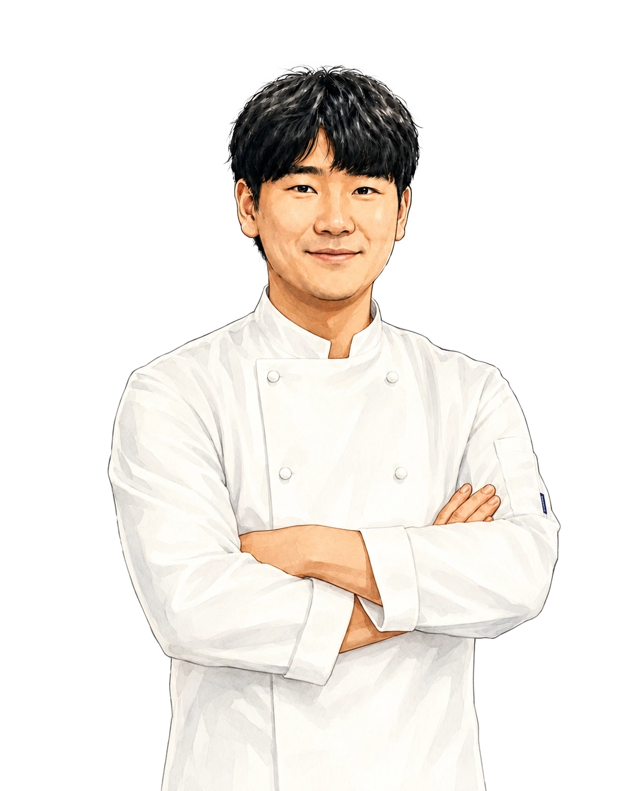
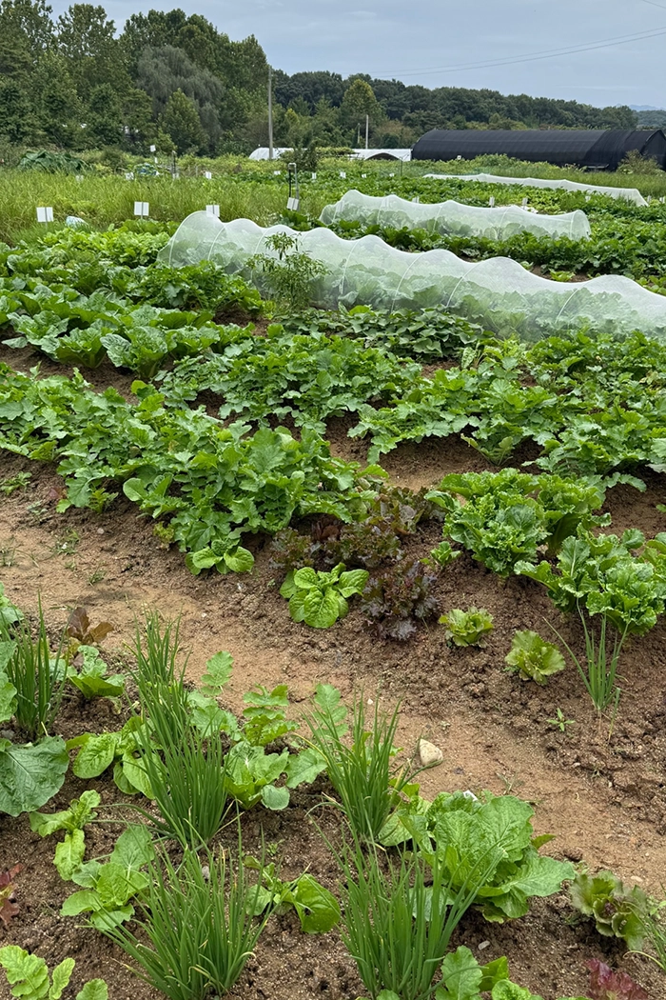
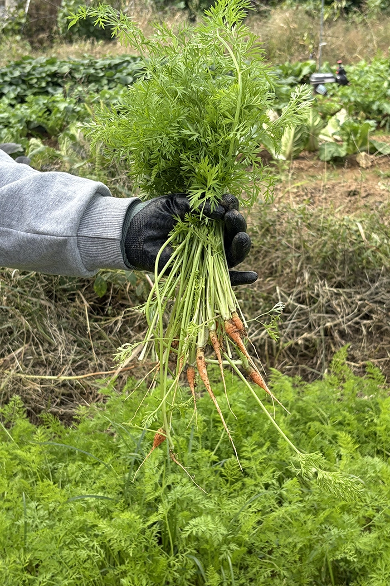
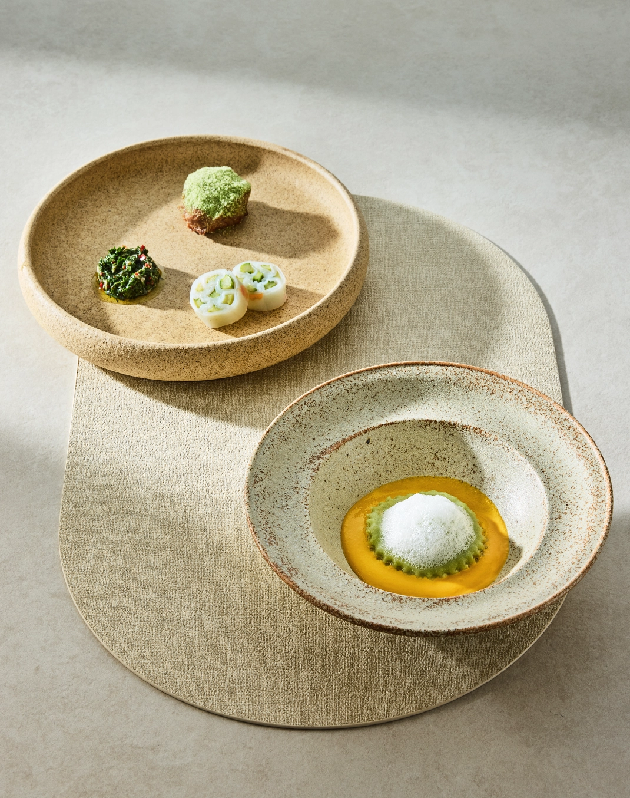

BRAND STORY
Sydney to Seoul
시드니서울은 서로 다른 두 도시에서 얻은 경험과 영감을
하나의 테이블 위에 풀어내는 컨템포러리 다이닝입니다.
시드니에서 배운 자유로운 감각과 재료에 대한 존중,
서울이 지닌 섬세한 미감과 계절의 흐름을 바탕으로
익숙한 맛을 새롭게 바라봅니다.
두 도시의 경계를 넘어,
시드니서울만의 균형과 방식으로 완성한 요리를 선보입니다.
CHEF
The Chef

호주 르 코르동 블루에서 수련한 셰프는
호주의 자유로운 미식 문화와
다양한 식재료에서 자신만의 감각을 쌓았습니다.
2020년 비건 요리와 일반식을 함께 선보이는
호주식 캐주얼 모던 다이닝 '업투미'를 시작했으며,
2025년에는 한우를 중심으로
프렌치와 한식의 조화를 풀어낸
퓨전 레스토랑 '우고미'를 선보였습니다.
서로 다른 문화와 조리 방식의 경계를 넘나들며,
재료가 지닌 고유한 맛을
섬세하고 새로운 방식으로 표현합니다.
PHILOSOPHY
Our Philosophy
좋은 요리의 시작은
재료를 깊이 이해하고 존중하는 데 있다고 믿습니다.
직접 기른 제철 채소와 호주산 소고기, 캥거루, 바라문디 등
호주와 한국의 자연에서 얻은 식재료를 세심하게 살피고,
각각의 맛과 질감이 온전히 드러나는 방식으로 풀어냅니다.
익숙한 재료에 새로운 시선, 섬세한 조리법을 더해
두 지역의 풍경과 계절이 조화를 이루는
시드니서울만의 한 접시를 완성합니다.


